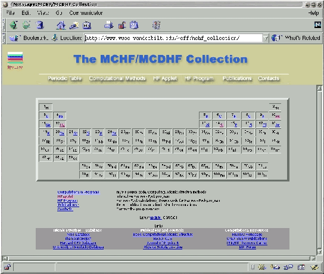

http://www.vuse.vanderbilt.edu/~cff/mchf_collection/, which displays the Periodic Table. In addition to Atomic data, the Web site contains source code, an interactive version of the hf program and information relevant to the computational methods utilized for mass production.
|  |
In the Breit-Pauli approximation, terms for a specific J value interact, and this requires that mixing effects between terms be considered. The traditional MCHF method was modified to permit a simultaneous optimization of the weighted energy expressions derived from multiple terms. This allowed a single orbital set to represent a choice of terms with strong relativistic mixing. Then, by diagonalization of the Breit-Pauli Hamiltonian a few selected eigenvalues were determined. The bi-orthonormal method was applied to compute the transition data.
Note to the system administrator of hf5: If problem occurs with the hf program on the Web, hf5 should be checked for the following:
(georgio@hf5)103% ps -ef | grep apache apache 9933 826 0 Oct07 ? 00:00:00 /usr/sbin/httpd -DHAVE_PROXY -DH apache 9934 826 0 Oct07 ? 00:00:00 /usr/sbin/httpd -DHAVE_PROXY -DH apache 9935 826 0 Oct07 ? 00:00:00 /usr/sbin/httpd -DHAVE_PROXY -DH apache 9936 826 0 Oct07 ? 00:00:00 /usr/sbin/httpd -DHAVE_PROXY -DH apache 9937 826 0 Oct07 ? 00:00:00 /usr/sbin/httpd -DHAVE_PROXY -DH apache 9938 826 0 Oct07 ? 00:00:00 /usr/sbin/httpd -DHAVE_PROXY -DH apache 16238 826 0 04:40 ? 00:00:00 /usr/sbin/httpd -DHAVE_PROXY -DH georgio 17442 17403 0 18:41 pts/7 00:00:00 grep apache
(georgio@hf5)101% ps -ef | grep java root 950 1 0 Oct05 ? 00:00:00 /opt/java/j2sdk1.4.0/bin/i386/na root 986 950 0 Oct05 ? 00:00:00 /opt/java/j2sdk1.4.0/bin/i386/na root 987 986 0 Oct05 ? 00:00:00 /opt/java/j2sdk1.4.0/bin/i386/na root 988 986 0 Oct05 ? 00:00:00 /opt/java/j2sdk1.4.0/bin/i386/na root 989 986 0 Oct05 ? 00:00:00 /opt/java/j2sdk1.4.0/bin/i386/na root 990 986 0 Oct05 ? 00:00:01 /opt/java/j2sdk1.4.0/bin/i386/na root 991 986 0 Oct05 ? 00:00:00 /opt/java/j2sdk1.4.0/bin/i386/na root 992 986 0 Oct05 ? 00:00:00 /opt/java/j2sdk1.4.0/bin/i386/na root 993 986 0 Oct05 ? 00:00:00 /opt/java/j2sdk1.4.0/bin/i386/na root 996 986 0 Oct05 ? 00:00:00 /opt/java/j2sdk1.4.0/bin/i386/na root 1269 986 0 Oct05 ? 00:00:00 /opt/java/j2sdk1.4.0/bin/i386/na root 1270 986 0 Oct05 ? 00:00:00 /opt/java/j2sdk1.4.0/bin/i386/na georgio 17438 17403 0 18:40 pts/7 00:00:00 grep java
If the Java server was not running the output would have been:
(georgio@hf5)101% ps -ef | grep java georgio 17438 17403 0 18:40 pts/7 00:00:00 grep java
Both, the Apache server and the hf Java server are configured to automatically start upon rebooting of the node hf5. While the scripts for the Apache server are default in the RedHat 7.1 installation and have not been modified, the hf Java server startup script is executed in /etc/rc.local (this script starts the local services). /etc/rc.local starts the hf Java server by executing the script /var/www/html/sh_start_HFapplet_server. Note that in order to start the hf Java server it is sufficient to execute as a root:
#cd /var/www/html/ #./_start_HFapplet_server
The file /var/www/html/log.hf_applet keeps information about all IP's which had accessed the hf program and performed runs (The output below shows a portion of this file and IP's from all over the world for the last 2 months > 1000 accesses):
(georgio@hf5)128% tail /var/www/html/log.hf_applet Server: Connection to 139.91.195.54/139.91.195.54 established Server: Connection to elena.iesl.forth.gr/139.91.195.54 established Server: Connection to 195.54.103.39/195.54.103.39 established Server: Connection to kublai.djingis.m.se/195.54.103.39 established Server: Connection to alain.m36sci.nrc.ca/132.246.22.169 established Server: Connection to pcphy117.physik.uni-kl.de/131.246.11.210 established Server: Connection to atm.nist.gov/129.6.84.160 established Server: Connection to useraa87.uk.uudial.com/62.188.130.87 established Server: Connection to natpool1-1.bsu.unibel.by/195.50.4.44 established Server: Connection to d80h103.public.uconn.edu/137.99.80.103 established Server: Connection to duchamp.phy.nist.gov/129.6.169.31 established Server: Connection to capsule.neep.wisc.edu/128.104.185.245 established Server: Connection to cfppp2-17.harvard.edu/131.142.14.117 established Server: Connection to P-1.251.EUnet.yu/213.240.1.251 established Server: Connection to mdm3428.chem.utah.edu/128.110.196.147 established Server: Connection to wigner.physik.uni-kassel.de/141.51.196.23 established Server: Connection to mdm3428.chem.utah.edu/128.110.196.147 established Server: Connection to naglfar.sljus.lu.se/130.235.91.187 established Server: Connection to mach.ulb.ac.be/164.15.128.3 established Server: Connection to berry.phys.nd.edu/129.74.75.176 established Server: Connection to hgberry.phys.nd.edu/129.74.76.3 established Server: Connection to coral-56-96.pompano.net/24.26.56.96 established Server: Connection to elettra.arcetri.astro.it/193.206.155.27 established Server: Connection to 1Cust29.tnt9.tco2.da.uu.net/63.15.231.29 established Server: Connection to coral-56-96.pompano.net/24.26.56.96 established Server: Connection to hgberry.phys.nd.edu/129.74.76.3 established Server: Connection to 129.74.76.24/129.74.76.24 established Server: Connection to hal4.usm.uni-muenchen.de/129.187.204.12 established Server: Connection to lavender.phys.put.poznan.pl/150.254.132.5 established Server: Connection to ykkim.phy.nist.gov/129.6.169.2 established Server: Connection to m133-48.bgsu.edu/129.1.133.48 established Server: Connection to ljclap.physics.utoledo.edu/131.183.161.100 established Server: Connection to meltemi.physics.uoc.gr/147.52.180.194 established Server: Connection to bethe.fy.chalmers.se/129.16.113.136 established